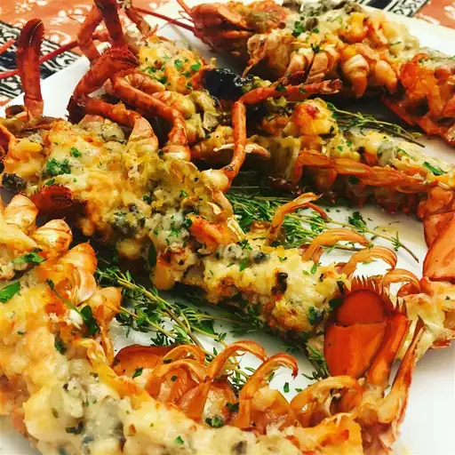

Lobster Themidor

Lobster Themidor
Lobster themidor is a French dish consisting
of diced lobster meat stuffed into
lobster shell,
topped with a buttery wine sauce, sprinkled with cheese,
and broiled.
The iconic dish gets its name from a popular
1891 play called Thermidor by Victorien Sardou.
This stunning lobster Thermidor is surprisingly simple to make.
Lobster shells are stuffed with cooked
lobster in a creamy
white wine sauce, then topped with Parmesan cheese and broiled
until golden.
Ingredients:
- 1 medium (1 1/2 pound) cooked lobster
- 2 tablespoons butter
- 1 shallot, finely chopped
- 1 ⅜ cups fresh fish stock
- ¼ cup white wine
- ¼ cup heavy cream
- ½ teaspoon hot English mustard
- 2 tablespoons chopped fresh parsley
- 1 tablespoon fresh lemon juice
- salt and freshly ground black pepper to taste
- ¼ cup freshly grated Parmesan cheese
How to Make Lobster Thermidor:
You'll find the full, step-by-step
recipe below — but here's a brief
overview
what you can expect when
you make lobster thermidor at home:
- Stuff the lobsters: Cut the lobsters in
half and remove the meat. Cut the meat into
pieces, then return them to the shells.
- Make the sauce: Cook the shallots in butter,
then add the wine and cream. Bring to a boil,
cook until reduced, and add the remaining
ingredients (besides the cheese).
- Assemble and broil: Spoon the sauce over the
stuffed lobsters and sprinkle with cheese.
Broil the lobsters until the cheese is golden
brown.
More elaborate directions to make Lobster
Themidor:
- Cut lobster in half lengthwise, and remove
any meat from the claws, tail, and head.
Cut meat into pieces and place back into
the shells.
- Melt butter in a large skillet over medium
heat. Add shallot; cook and stir until tender.
Mix in fish stock, white wine, and cream. Bring
to a boil, and cook until reduced by half. Mix in
parsley, lemon juice, mustard, salt, and pepper.
- Preheat your oven's broiler.
- Place stuffed lobster halves on a broiling pan or
baking sheet. Spoon sauce over the meat and sprinkle
with Parmesan cheese.
- Broil in the preheated oven until just golden brown,
3 to 4 minutes. Serve immediately.